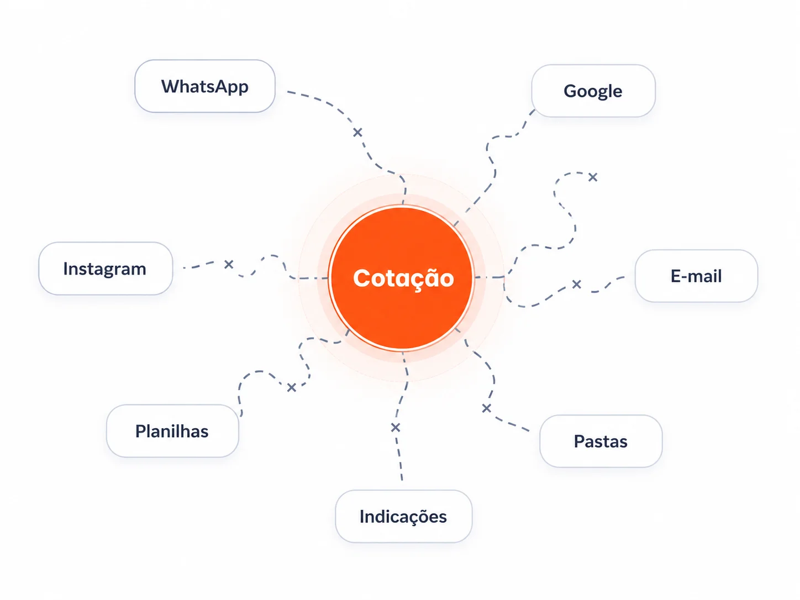
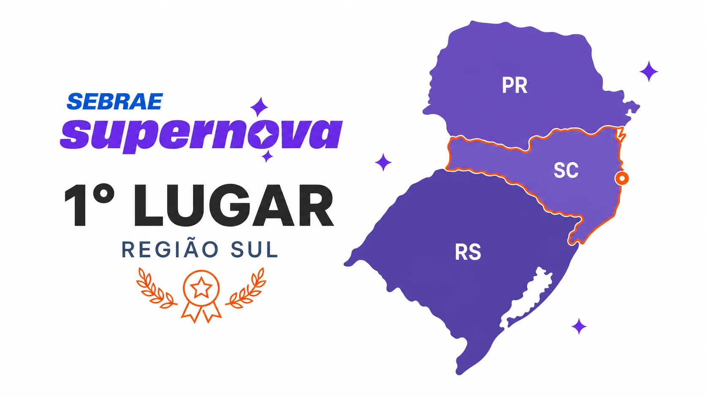

Encontrar fornecedores compatíveis
A busca é manual e espalhada, sem filtros centralizados por material, região, prazo, frete ou especialidade.
A Fornex está sendo desenvolvida para conectar construtoras e fornecedores em um só ambiente, centralizando a busca, o envio, o recebimento e a organização de propostas.
Em muitas empresas, a busca por fornecedores, o envio dos pedidos, o recebimento das respostas e a comparação das propostas ficam espalhados entre canais que não conversam entre si.

Conversas com construtoras, incorporadoras e profissionais de compras revelaram dificuldades práticas que se repetem em obras de diferentes portes, desde a busca por fornecedores à comparação das propostas recebidas.
A busca é manual e espalhada, sem filtros centralizados por material, região, prazo, frete ou especialidade.
A mesma solicitação precisa ser enviada individualmente para diferentes fornecedores e canais.
PDFs, fotos, mensagens e planilhas exigem conferência e reorganização antes da comparação.
Cotações antigas ficam dispersas por obra, material, fornecedor e ferramenta.
A verificação de novos fornecedores depende de indicações, experiência anterior e pesquisa manual.
A equipe gasta tempo buscando contatos, reenviando pedidos, acompanhando respostas e montando comparativos.
O resultado é mais tempo operacional, menos rastreabilidade e maior risco de erros e retrabalho.
Em vez de alternar entre várias ferramentas, a construtora poderá concentrar o fluxo de cotação em um ambiente desenvolvido para as necessidades da construção civil.
Com a Fornex, cada etapa se conecta ao mesmo processo.
A plataforma organiza as informações para apoiar a análise. A decisão de compra continua sendo da equipe responsável.
A Fornex foi pensada para acompanhar o processo desde a busca por fornecedores até a organização do histórico de compra.
A IA organiza as informações; ela não escolhe a proposta vencedora.
Essas são algumas das funcionalidades planejadas para a Fornex. A solução será evoluída junto às necessidades do mercado.
A validação inicial reuniu construtoras, incorporadoras e profissionais envolvidos em compras e orçamentos para entender como buscam fornecedores, solicitam cotações e organizam as respostas.
Empresas e profissionais entrevistados
Dores recorrentes surgindo de diferentes rotinas
Dores convergindo para um único fluxo fragmentado
Princípios da Fornex conectados às dores identificadas
Entre as empresas entrevistadas estão:
A validação apresentada considera entrevistas com construtoras. A validação com fornecedores ainda deve ser tratada como uma próxima etapa.
Conversamos com o mercado antes de construir a solução. O problema não está apenas em encontrar fornecedores, mas em gerenciar todo o ciclo de cotação de forma organizada, confiável e eficiente.
A Fornex conquistou o 1º lugar na Região Sul do Sebrae Supernova 2025. O reconhecimento reforça o potencial da proposta e sua conexão com um problema real do mercado.

Antes do reconhecimento no Sebrae Supernova, a Fornex percorreu quatro etapas que conectaram o problema real do mercado à solução em construção.
Registre seu interesse e acompanhe a evolução da Fornex desde as primeiras etapas.
O cadastro é apenas uma manifestação de interesse e não cria compromisso comercial.